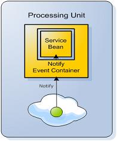

Section Summary: The notify event container uses the space inherited support for notifications, using a GigaSpaces unified event session API.
Overview
The notify event container uses the space inheritance support for notifications using a GigaSpaces unified event session API. If a notification occurs, the data event listener is invoked with the event. A notify event operation is mainly used when simulating Topic semantics.

Here is a simple example of a notify event container configuration:
Annotation
<!-- Enable scan for OpenSpaces and Spring components --> <context:component-scan base-package="com.mycompany"/> <!-- Enable support for @Notify annotation --> <os-events:annotation-support /> <os-core:space id="space" url="/./space" /> <os-core:giga-space id="gigaSpace" space="space"/>
@EventDriven @Notify public class SimpleListener { @EventTemplate Data unprocessedData() { Data template = new Data(); template.setProcessed(false); return template; } @SpaceDataEvent public Data eventListener(Data event) { //process Data here } }
Namespace
<os-core:space id="space" url="/./space" /> <os-core:giga-space id="gigaSpace" space="space"/> <bean id="simpleListener" class="SimpleListener" /> <os-events:notify-container id="eventContainer" giga-space="gigaSpace"> <os-core:template> <bean class="org.openspaces.example.data.common.Data"> <property name="processed" value="false"/> </bean> </os-core:template> <os-events:listener> <os-events:annotation-adapter> <os-events:delegate ref="simpleListener"/> </os-events:annotation-adapter> </os-events:listener> </os-events:notify-container>
Plain XML
<bean id="space" class="org.openspaces.core.space.UrlSpaceFactoryBean"> <property name="url" value="/./space" /> </bean> <bean id="gigaSpace" class="org.openspaces.core.GigaSpaceFactoryBean"> <property name="space" ref="space" /> </bean> <bean id="simpleListener" class="SimpleListener" /> <bean id="eventContainer" class="org.openspaces.events.notify.SimpleNotifyEventListenerContainer"> <property name="gigaSpace" ref="gigaSpace" /> <property name="template"> <bean class="org.openspaces.example.data.common.Data"> <property name="processed" value="false"/> </bean> </property> <property name="eventListener"> <bean class="org.openspaces.events.adapter.AnnotationEventListenerAdapter"> <property name="delegate" ref="simpleListener" /> </bean> </property> </bean>
Code
GigaSpace gigaSpace = // either create the GigaSpace or get it by injection SimpleNotifyEventListenerContainer notifyEventListenerContainer = new SimpleNotifyContainerConfigurer(gigaSpace) .template(new Data(false)) .eventListenerAnnotation(new Object() { @SpaceDataEvent public void eventHappened() { eventCalled.set(true); } }).notifyContainer(); // when needed dispose of the notification container notifyEventListenerContainer.destroy();
The above example registers with the space for write notifications using the provided template (a Data object with its processed flag set to false). If a notification occurs, the SimpleListener is invoked. Registration for notifications is performed on the configured GigaSpace bean. (In this case, if working in a clustered topology, the notification is performed directly on the cluster member.)
Primary/Backup
By default, the notify event container registers for notifications only when the relevant space it is working against is in primary mode. When the space is in backup mode, no registration occurs. If the space moves from backup mode to primary mode, the container registers for notifications, and if it moved to backup mode, the registrations are canceled.
 This mostly applies when working with an embedded space directly with a cluster member. When working with a clustered space (performing operations against the whole cluster), the mode of the space is always primary.
This mostly applies when working with an embedded space directly with a cluster member. When working with a clustered space (performing operations against the whole cluster), the mode of the space is always primary.
 Notifications for expired objects (NOTIFY_LEASE_EXPIRATION type) are sent both from the primary and the backup space. To avoid this, you should set the Notify Container replicateNotifyTemplate to false and run the notify container collocated with the space. This will start the Notify Container only with the primary and will avoid duplicated notifications.
Notifications for expired objects (NOTIFY_LEASE_EXPIRATION type) are sent both from the primary and the backup space. To avoid this, you should set the Notify Container replicateNotifyTemplate to false and run the notify container collocated with the space. This will start the Notify Container only with the primary and will avoid duplicated notifications.
Template Definition
When performing receive operations, a template is defined, creating a virtualized subset of data in the space, matching it. GigaSpaces supports templates based on the actual domain model (with null values denoting wildcards), which are shown in the examples. GigaSpaces allows the use of SQLQuery in order to query the space, which can be easily used with the event container as the template. Here is an example of how it can be defined:
Annotation
@EventDriven @Notify public class SimpleListener { @EventTemplate SQLQuery<Data> unprocessedData() { SQLQuery<Data> template = new SQLQuery<Data>(Data.class, "processed = true"); return template; } @SpaceDataEvent public Data eventListener(Data event) { //process Data here } }
Namespace
<os-events:notify-container id="eventContainer" giga-space="gigaSpace"> <os-core:sql-query where="processed = true" class="org.openspaces.example.data.common.Data"/> <os-events:listener> <os-events:annotation-adapter> <os-events:delegate ref="simpleListener"/> </os-events:annotation-adapter> </os-events:listener> </os-events:notify-container>
Plain XML
<bean id="eventContainer" class="org.openspaces.events.notify.SimpleNotifyEventListenerContainer"> <property name="gigaSpace" ref="gigaSpace" /> <property name="template"> <bean class="com.j_spaces.core.client.SQLQuery"> <constructor index="0" value="org.openspaces.example.data.common.Data" /> <constructor index="0" value="processed = true" /> </bean> </property> <property name="eventListener"> <bean class="org.openspaces.events.adapter.AnnotationEventListenerAdapter"> <property name="delegate" ref="simpleListener" /> </bean> </property> </bean>
| A polling container or notify container could have only one template. If you need multiple event handlers you will need to create another polling container or notify container. If you use multiple polling containers make sure the different templates does not overlap each other. |
Transaction Support
The notify container can be configured with transaction support, so the event action can be performed under a transaction. Exceptions thrown by the event listener cause the operations performed within the listener to be rolled back automatically.
 When using transactions, only the event listener operations are rolled back. The notifications are not sent again in case of a transaction rollback. In case this behavior is required, please consider using the Polling Event Container.
When using transactions, only the event listener operations are rolled back. The notifications are not sent again in case of a transaction rollback. In case this behavior is required, please consider using the Polling Event Container.
Transaction support can be configured as follows:
Annotation
<!-- Enable scan for OpenSpaces and Spring components --> <context:component-scan base-package="com.mycompany"/> <!-- Enable support for @Polling annotation --> <os-events:annotation-support /> <os-core:space id="space" url="/./space" /> <os-core:local-tx-manager id="transactionManager" space="space"/> <os-core:giga-space id="gigaSpace" space="space" tx-manager="transactionManager"/>
@EventDriven @Notify @TransactionalEvent public class SimpleListener { @EventTemplate Data unprocessedData() { Data template = new Data(); template.setProcessed(false); return template; } @SpaceDataEvent public Data eventListener(Data event) { //process Data here } }
Namespace
<os-core:space id="space" url="/./space" /> <os-core:local-tx-manager id="transactionManager" space="space"/> <os-core:giga-space id="gigaSpace" space="space" tx-manager="transactionManager"/> <bean id="simpleListener" class="SimpleListener" /> <os-events:notify-container id="eventContainer" giga-space="gigaSpace"> <os-events:tx-support tx-manager="transactionManager"/> <os-core:template> <bean class="org.openspaces.example.data.common.Data"> <property name="processed" value="false"/> </bean> </os-core:template> <os-events:listener> <os-events:annotation-adapter> <os-events:delegate ref="simpleListener"/> </os-events:annotation-adapter> </os-events:listener> </os-events:notify-container>
Plain XML
<bean id="space" class="org.openspaces.core.space.UrlSpaceFactoryBean"> <property name="url" value="/./space" /> </bean> <bean id="transactionManager" class="org.openspaces.core.transaction.manager.LocalJiniTransactionManager"> <property name="space" ref="space" /> </bean> <bean id="gigaSpace" class="org.openspaces.core.GigaSpaceFactoryBean"> <property name="space" ref="space" /> <property name="transactionManager" ref="transactionManager" /> </bean> <bean id="simpleListener" class="SimpleListener" /> <bean id="eventContainer" class="org.openspaces.events.notify.SimpleNotifyEventListenerContainer"> <property name="transactionManager" ref="transactionManager" /> <property name="gigaSpace" ref="gigaSpace" /> <property name="template"> <bean class="org.openspaces.example.data.common.Data"> <property name="processed" value="false"/> </bean> </property> <property name="eventListener"> <bean class="org.openspaces.events.adapter.AnnotationEventListenerAdapter"> <property name="delegate" ref="simpleListener" /> </bean> </property> </bean>
Masking Notifications
The notify container allows you to mask which operations performed against the space, should cause notifications. By default (if none is defined), notifications are sent for write operations. The operations are: write (an entry matching the template has been written to the space), update (an entry matching the template has been updated in the Space), take (an entry matching the template has been taken from the Space), lease expiration (an entry matching the template lease has been expired), unmatched (an entry matching the template no longer matches the template), and all. Here is an example of the notify container configured to trigger notifications for both write and update operations:
Annotation
@EventDriven @Notify @NotifyType(write = true, update = true) public class SimpleListener { @EventTemplate Data unprocessedData() { Data template = new Data(); template.setProcessed(false); return template; } @SpaceDataEvent public Data eventListener(Data event) { //process Data here } }
Namespace
<os-events:notify-container id="eventContainer" giga-space="gigaSpace"> <os-events:notify write="true" update="true"/> <os-core:template> <bean class="org.openspaces.example.data.common.Data"> <property name="processed" value="false"/> </bean> </os-core:template> <os-events:listener> <os-events:annotation-adapter> <os-events:delegate ref="simpleListener"/> </os-events:annotation-adapter> </os-events:listener> </os-events:notify-container>
Plain XML
<bean id="eventContainer" class="org.openspaces.events.notify.SimpleNotifyEventListenerContainer"> <property name="gigaSpace" ref="gigaSpace" /> <property name="notifyWrite" value="true" /> <property name="notifyUpdate" value="true" /> <property name="template"> <bean class="org.openspaces.example.data.common.Data"> <property name="processed" value="false"/> </bean> </property> <property name="eventListener"> <bean class="org.openspaces.events.adapter.AnnotationEventListenerAdapter"> <property name="delegate" ref="simpleListener" /> </bean> </property> </bean>
Scaling Notification Delivery
To increase the number of space threads that are dealing with notification delivery you should increase the space-config.engine.notify_max_threads space property. Its default is 128 threads.
Here is an example how you can configure the minimum and the maximum of the thread pool responsible for notification delivery:
<os-core:space id="space" url="/./space"> <os-core:properties> <props> <prop key="space-config.engine.notify_min_threads">128</prop> <prop key="space-config.engine.notify_max_threads">512</prop> </props> </os-core:properties> </os-core:space> <os-core:giga-space id="gigaSpace" space="space"/> <bean id="simpleListener" class="SimpleListener" /> <os-events:notify-container id="eventContainer" giga-space="gigaSpace"> <os-core:template> <bean class="org.openspaces.example.data.common.Data"> <property name="processed" value="false"/> </bean> </os-core:template> <os-events:listener> <os-events:annotation-adapter> <os-events:delegate ref="simpleListener"/> </os-events:annotation-adapter> </os-events:listener> </os-events:notify-container>
Communication Protocol Type
The notify container, through the use of the unified event session API, can control how notifications are triggered from the space to the listener, in terms of communication protocol. The following communication protocols are available:
| Communication Protocol | Description |
|---|---|
| UNICAST | Unicast propagation uses TCP unicast communication, which is usually best for a small amount of registered clients. This is the default communication type. |
| MULTIPLEX | The same as UNICAST in terms of communication protocol, but uses a single client-side multiplexer, which handles all of the dispatching to the different notification listeners. |
| MULTICAST | Multicast propagation uses UDP multicast communication, which is usually best for large amounts of registered clients. See the JavaSpaces Multicast Notifications section*** for configuration options. |
Here is a sample configuration of the notify container that uses the MULTIPLEX communication protocol type:
Annotation
@EventDriven @Notify(commType = NotifyComType.MULTIPLEX) public class SimpleListener { @EventTemplate Data unprocessedData() { Data template = new Data(); template.setProcessed(false); return template; } @SpaceDataEvent public Data eventListener(Data event) { //process Data here } }
Namespace
<os-events:notify-container id="eventContainer" giga-space="gigaSpace" com-type="MULTIPLEX"> <os-core:template> <bean class="org.openspaces.example.data.common.Data"> <property name="processed" value="false"/> </bean> </os-core:template> <os-events:listener> <os-events:annotation-adapter> <os-events:delegate ref="simpleListener"/> </os-events:annotation-adapter> </os-events:listener> </os-events:notify-container>
Plain XML
<bean id="eventContainer" class="org.openspaces.events.notify.SimpleNotifyEventListenerContainer"> <property name="gigaSpace" ref="gigaSpace" /> <property name="comTypeName" value="MULTIPLEX" /> <property name="template"> <bean class="org.openspaces.example.data.common.Data"> <property name="processed" value="false"/> </bean> </property> <property name="eventListener"> <bean class="org.openspaces.events.adapter.AnnotationEventListenerAdapter"> <property name="delegate" ref="simpleListener" /> </bean> </property> </bean>
The JavaSpaces Multicast Notifications section*** explains how to configure and enable multicast notifications support inside the space schema. The multicast worker itself can be easily enabled in the space configuration:
Namespace
<os-core:space id="space" url="/./space"> <os-core:properties> <props> <prop key="space-config.workers.MulticastNotifyWorker.enabled">true</prop> </props> </os-core:properties> </os-core:space>
Plain XML
<bean id="space" class="org.openspaces.core.space.UrlSpaceFactoryBean"> <property name="url" value="/./space" /> <property name="properties"> <props> <prop key="space-config.workers.MulticastNotifyWorker.enabled">true</prop> </props> </property> </bean>
Batch Events
OpenSpaces, through the Session Based Messaging API, allows batching of notifications. Batching causes the space to accumulate the notifications at the space side for the specified operation(s) with objects that match the template/SQL criteria. Once a certain amount of time has been elapsed or a certain amount of objects have been accumulated, the events are sent to the client.
Batching is very useful when working with a remote space, since it reduces the network roundtrip operations. The downside of this approach is a potential delay when events are delivered to the client.
Below is an example how batch notification should be configured. With this example the eventListener method will be called having one event passed as an argument each time (since the pass-array-as-is is not enabled) once there were 10 matching objects accumulated within the space or every 5000 millisecond since the last time a batch was sent to the client. In this case (notification delivery based on elapsed time), there might be less than 10 objects that will be sent to the client.
| Make sure you set a reasonable batch size to avoid overloading the listener with a large burst of events to process. A value under 100 will be acceptable for most cases. |
Annotation
@EventDriven @Notify @NotifyBatch(size = 10, time = 5000) public class SimpleListener { @EventTemplate Data unprocessedData() { Data template = new Data(); template.setProcessed(false); return template; } @SpaceDataEvent public Data eventListener(Data event) { //process Data here } }
Namespace
<os-events:notify-container id="eventContainer" giga-space="gigaSpace"> <os-events:batch size="10" time="5000"/> <os-core:template> <bean class="org.openspaces.example.data.common.Data"> <property name="processed" value="false"/> </bean> </os-core:template> <os-events:listener> <os-events:annotation-adapter> <os-events:delegate ref="simpleListener"/> </os-events:annotation-adapter> </os-events:listener> </os-events:notify-container>
Plain XML
<bean id="eventContainer" class="org.openspaces.events.notify.SimpleNotifyEventListenerContainer"> <property name="gigaSpace" ref="gigaSpace" /> <property name="batchSize" value="10" /> <property name="batchTime" value="5000" /> <property name="template"> <bean class="org.openspaces.example.data.common.Data"> <property name="processed" value="false"/> </bean> </property> <property name="eventListener"> <bean class="org.openspaces.events.adapter.AnnotationEventListenerAdapter"> <property name="delegate" ref="simpleListener" /> </bean> </property> </bean>
Pass Array as is
When batching is enabled an array of Entries is received from the notification. By default, the notify container serializes the execution of the array into invocation of the event listener for each element in the array. If you want the event to operate on the whole array (receive the array as a parameter), the pass-array-as-is configuration attribute should be set to true.
| Listener argument has to be defined as Object[] when using passArrayAsIs and converted to appropriate class as part of the listener code. |
For the above example when using passArrayAsIs equivalent listener code will be,
@EventDriven @Notify @NotifyBatch(size = 10, time = 5000, passArrayAsIs = true) public class SimpleListener { @EventTemplate Data unprocessedData() { Data template = new Data(); template.setProcessed(false); return template; } @SpaceDataEvent public Data eventListener(Object[] events) { //Convert events to Data[] and process here } }
FIFO Events
The notify event container can register for events or notifications and have the events delivered in a FIFO order.
 For full FIFO support, the actual template also has to be marked as FIFO. For more details, refer to the Space FIFO support section.
For full FIFO support, the actual template also has to be marked as FIFO. For more details, refer to the Space FIFO support section.
Here is an example of how FIFO events can be configured with the notify container:
Annotation
@EventDriven @Notify(fifo = true) public class SimpleListener { @EventTemplate Data unprocessedData() { Data template = new Data(); template.setProcessed(false); return template; } @SpaceDataEvent public Data eventListener(Data event) { //process Data here } }
Namespace
<os-events:notify-container id="eventContainer" giga-space="gigaSpace" fifo="true"> <os-core:template> <bean class="org.openspaces.example.data.common.Data"> <property name="processed" value="false"/> </bean> </os-core:template> <os-events:listener> <os-events:annotation-adapter> <os-events:delegate ref="simpleListener"/> </os-events:annotation-adapter> </os-events:listener> </os-events:notify-container>
Plain XML
<bean id="eventContainer" class="org.openspaces.events.notify.SimpleNotifyEventListenerContainer"> <property name="gigaSpace" ref="gigaSpace" /> <property name="fifo" value="true" /> <property name="template"> <bean class="org.openspaces.example.data.common.Data"> <property name="processed" value="false"/> </bean> </property> <property name="eventListener"> <bean class="org.openspaces.events.adapter.AnnotationEventListenerAdapter"> <property name="delegate" ref="simpleListener" /> </bean> </property> </bean>
Re-Register after complete space shutdown and restart
Notify Containers under the hood use Notification Registration. When a remote client with an independent life cycle creates a Notify Container and is shutdown, the registration will remain in the space and can be a unnecessary overhead for the space if there are multiple clients registered for many templates.
To avoid this overhead, an optimization is required where notification registration is created with a limited lease and the client periodically renews the lease to keep it active. If client is shutdown or does not need this events anymore, the lease is not renewed thereby removing the registration.
Lease Renewal Manager provides a systematic lease renewal and management framework and is used by Notify Container for managing the notification registration leases. Leases are managed in an automatic manner without any application intervention. More information regarding Lease Renewal Manager can be found here.
To allow a remote client using a notify container to continue and receive notifications in case the space cluster was completely shutdown and restarted, you should use the LeaseListener and re-create the notify container in case its lease renewal failed (i.e. LeaseListener.notify() been called). The notify container must enable the autoRenew property to instruct GigaSpaces to construct a Lease Renewal Manager and have the associated LeaseListener implementation to be invoked.
With this approach we assume the space will be available is some point to acknowledge the registration and continue and send notifications for the matching events back to the client.
See below Notify Container properties you may set when using the LeaseListener managed by the Lease Renewal Manager running within the Notify container:
| Property | Description | Default | Unit |
|---|---|---|---|
| autoRenew | If set to true, automatically performs lease renewal and call the LeaseListener.notify() if fails to renew, where the lease's desired expiration time has not yet been reached. | false | |
| listenerLease | Controls the lease (time to live) associated with the registered notify listener | Lease.FOREVER | ms |
| renewExpiration | The period of time your notifications stopped from being renewed. Applies Only when autoRenew is true | Lease.FOREVER | ms |
| renewDuration | The period of time that passes between client failure, and the time your notifications stop from being sent. Should be larger than renewRTT. Applies Only when autoRenew is true. | 20000 | ms |
| renewRTT | RoundTripTime - The time that takes to reach the server and return. Applies Only when autoRenew is true. | 10000 | ms |
| Prior calling the LeaseListener.notify() , the LeaseRenewalManager used by the Notify container, will remove the affected lease from its managed set of leases. |
See below example how to use the LeaseListener to re-register for notifications:
Notify Container Creation
public class NotifyHAMain { static GigaSpace space; static DateFormat formatter = new SimpleDateFormat( "MM/dd/yyyy hh:mm:ss.SSS"); static Calendar calendar = Calendar.getInstance(); public static void main(String[] args) throws Exception{ while (space == null) { getSpace(); } MyLeaseListener leaseListener = new MyLeaseListener(space); register(leaseListener); System.out.println("Notification Registration Done!"); while (true) { Thread.sleep(10000); } } static void getSpace() { try { space = new GigaSpaceConfigurer(new UrlSpaceConfigurer( "jini://*/*/space")).gigaSpace(); } catch (Exception e) { System.out.println(formatter.format(calendar.getTime()) + " Cannot find space. Got an exception " + e.getMessage()); } } static void register(MyLeaseListener leaseListener) { SimpleNotifyEventListenerContainer notifyEventListenerContainer = new SimpleNotifyContainerConfigurer(space) .template(new MyData()) .leaseListener(leaseListener) .autoRenew(true) .listenerLease(30000) .renewDuration(20000) .eventListenerAnnotation(new Object() { @SpaceDataEvent public void eventHappened(MyData data) { System.out.println(new Date(System.currentTimeMillis()).getSeconds() + " -- > Got notification " + data.getData()); } }).notifyContainer(); } }
The LeaseListener Implementation
public class MyLeaseListener implements LeaseListener{ public MyLeaseListener (GigaSpace space) { this.space=space; } GigaSpace space ; //Called by the LeaseRenewalManager when it cannot renew a lease that it is managing, //and the lease's desired expiration time has not yet been reached. public void notify(LeaseRenewalEvent event) { System.out.println("Can't renew - try to re-register"); SimpleNotifyEventListenerContainer notifyEventListenerContainer = null; while (notifyEventListenerContainer == null) { NotifyHAMain.getSpace(); notifyEventListenerContainer = NotifyHAMain.register(this); } System.out.println("Notfy ReRegistration Done!"); } }
| To make sure the client application will manage to reconnect automatically to the space cluster once it was restarted make sure you increase the space-config.proxy-settings.connection-retries parameter to have a high value. See the Proxy Connectivity for details. |
Resending Notifications after a Space-Client Disconnection
When a network failure occurs and the space can't communicate with the client, the space attempts to trigger the remote client listener several times. The space-config.notifier-retries property controls the re-try attempts. The default is 3 attempts.
<os-core:space id="space" url="/./space"> <os-core:properties> <props> <prop key="space-config.notifier-retries">10</prop> </props> </os-core:properties> </os-core:space>
Guaranteed Notifications
Guaranteed notifications provides allows to configure the notify container to guarantee that a notification will be sent at least once in case of failover.
Annotation
@EventDriven @Notify(guaranteed = true) public class SimpleListener { @EventTemplate Data unprocessedData() { Data template = new Data(); template.setProcessed(false); return template; } @SpaceDataEvent public Data eventListener(Data event) { //process Data here } }
Namespace
<os-events:notify-container id="eventContainer" giga-space="gigaSpace" guaranteed="true"> <os-core:template> <bean class="org.openspaces.example.data.common.Data"> <property name="processed" value="false"/> </bean> </os-core:template> <os-events:listener> <os-events:annotation-adapter> <os-events:delegate ref="simpleListener"/> </os-events:annotation-adapter> </os-events:listener> </os-events:notify-container>
Plain XML
<bean id="eventContainer" class="org.openspaces.events.notify.SimpleNotifyEventListenerContainer"> <property name="gigaSpace" ref="gigaSpace" /> <property name="guaranteed" value="true" /> <property name="template"> <bean class="org.openspaces.example.data.common.Data"> <property name="processed" value="false"/> </bean> </property> <property name="eventListener"> <bean class="org.openspaces.events.adapter.AnnotationEventListenerAdapter"> <property name="delegate" ref="simpleListener" /> </bean> </property> </bean>
Take on Notify
The notify event container can be configured to automatically perform a take on the notification data event. It can also be further configured to filter out events if the take operation returned null. (This usually happens when several clients receive this event, and only one succeeds with the take.)
Here is how the notify container can be configured:
Annotation
@EventDriven @Notify(performTakeOnNotify = true, ignoreEventOnNullTake = true) public class SimpleListener { @EventTemplate Data unprocessedData() { Data template = new Data(); template.setProcessed(false); return template; } @SpaceDataEvent public Data eventListener(Data event) { //process Data here } }
Namespace
<os-events:notify-container id="eventContainer" giga-space="gigaSpace" perform-take-on-notify="true" ignore-event-on-null-take="true"> <os-core:template> <bean class="org.openspaces.example.data.common.Data"> <property name="processed" value="false"/> </bean> </os-core:template> <os-events:listener> <os-events:annotation-adapter> <os-events:delegate ref="simpleListener"/> </os-events:annotation-adapter> </os-events:listener> </os-events:notify-container>
Plain XML
<bean id="eventContainer" class="org.openspaces.events.notify.SimpleNotifyEventListenerContainer"> <property name="gigaSpace" ref="gigaSpace" /> <property name="performTakeOnNotify" value="true" /> <property name="ignoreEventOnNullTake" value="true" /> <property name="template"> <bean class="org.openspaces.example.data.common.Data"> <property name="processed" value="false"/> </bean> </property> <property name="eventListener"> <bean class="org.openspaces.events.adapter.AnnotationEventListenerAdapter"> <property name="delegate" ref="simpleListener" /> </bean> </property> </bean>
| Be aware that when using this option the take operation might use non-indexed fields as part of the template object. If you would like to avoid this make sure all your Space class fields are indexed. Special care should be given to non-primitive fields (such as collections and user defined classes) to have their hashcode and equales methods implemented. This will make sure the matching of the template with the relevant object within the space will work correctly. |
RemoteEvent and EntryArrivedRemoteEvent
When registering for notifications, using the unified event session API (or using plain notify registration), the following interface needs to be implemented:
public interface RemoteEventListener extends java.rmi.Remote, java.util.EventListener { void notify(net.jini.core.event.RemoteEvent event) throws net.jini.core.event.UnknownEventException, java.rmi.RemoteException; }
GigaSpaces extends this interface by providing the EntryArrivedRemoteEvent, which holds additional information regarding the event that occurred. The notify container, by default, uses the EntryArrivedRemoteEvent in order to extract the actual data event represented by the event, and passes it as the first parameter. If access to the EntryArrivedRemoteEvent is still needed, it is passed as the last parameter to the space data event listener. Here is an example of how it can be used:
public class SimpleListener implements SpaceDataEventListener { public void onEvent(Object data, GigaSpace gigaSpace, TransactionStatus txStatus, Object source) { EntryArrivedRemoteEvent entryArrivedRemoteEvent = (EntryArrivedRemoteEvent) source; // ... } }
When using the different listener adapters, such as the annotation adapter, it can be accessed in the following manner (since adapters use reflection, there is no need to cast to EntryArrivedRemoteEvent):
public class SimpleListener { @SpaceDataEvent public void myEventHandler(Trade data, GigaSpace gigaSpace, TransactionStatus txStatus, EntryArrivedRemoteEvent entryArrivedRemoteEvent) { // process event } }
Default Values of Notify Container Configuration Parameters
The default values for all of the notify container configuration parameters, such as perform-take-on-notify, ignore-event-on-null-take and others can be found in the JavaDoc (and sources) of the class org.openspaces.events.notify.SimpleNotifyEventListenerContainer and its super class, namely org.openspaces.events.notify.AbstractNotifyEventListenerContainer.
For example, perform-take-on-notify default value is documented in the method SimpleNotifyEventListenerContainer.setPerformTakeOnNotify(boolean)
Schema
The Notify Container schema and complete configuration options are described below:
{kind=link}
***Link required